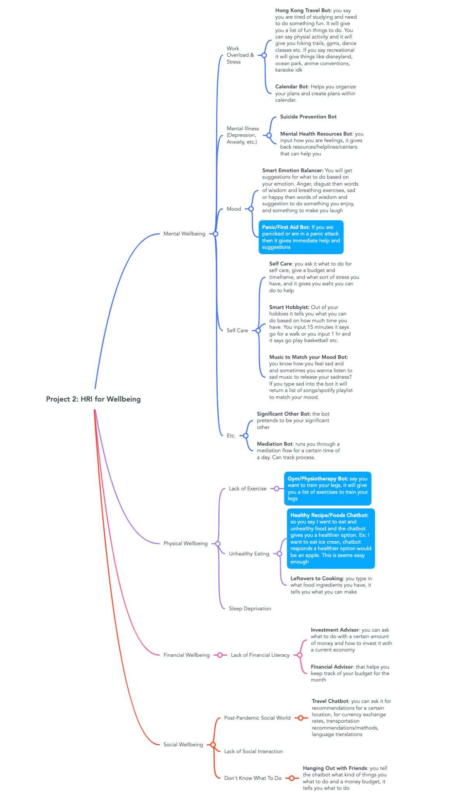
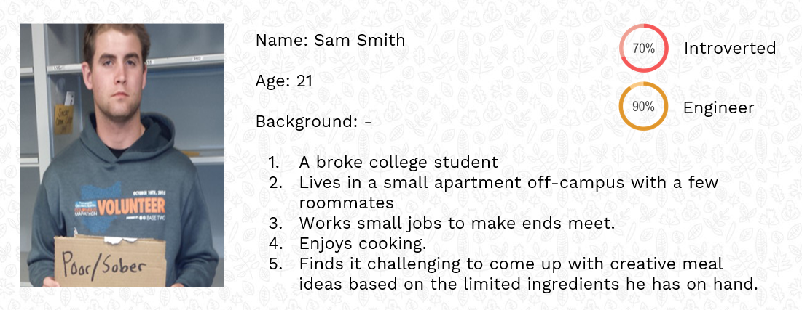
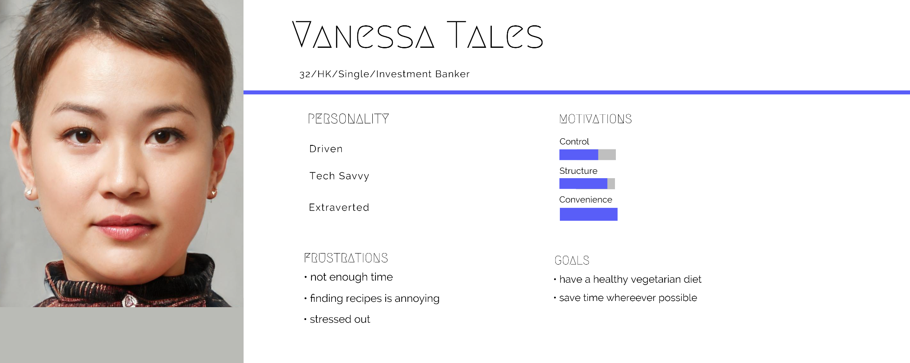
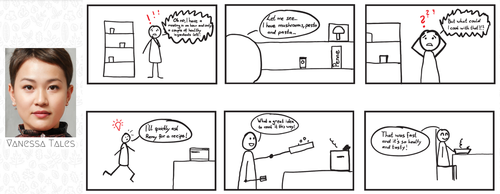
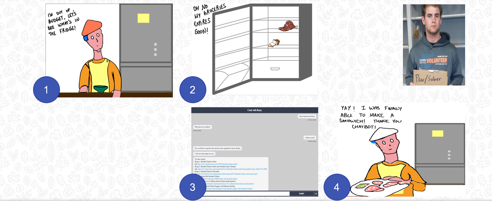

Cook With Remy
Introducing our chatbot for recipe recommendations! This handy companion will make it simple for you to prepare delectable dishes. To locate the ideal recipe, just tell the chatbot what ingredients you have on hand, and it will search through its enormous library of dishes to find it. Our chatbot has you covered whether you're searching for a fast weeknight meal or a grandiose feast for a special occasion. Say goodbye to mealtime stress and hello to delicious, hassle-free cooking with our recommendation chatbot!
Last updated 3rd April 2023
Cook with Remy
Introducing our chatbot for recipe recommendations! This handy companion will make it simple for you to prepare delectable dishes. To locate the ideal recipe, just tell the chatbot what ingredients you have on hand, and it will search through its enormous library of dishes to find it. Our chatbot has you covered whether you're searching for a fast weeknight meal or a grandiose feast for a special occasion. Say goodbye to mealtime stress and hello to delicious, hassle-free cooking with our recommendation chatbot!
Before getting started, our group developed the
following
mindmap: -

To learn more about people's requirements in four key areas—mental, physical, financial well-being, and daily demands—our team conducted thorough surveys. We discovered that a lot of people had trouble meal planning and cooking, particularly when attempting to use up goods they currently have. In order to make meals simpler and more effective, we came up with the idea of building a chatbot that could make food suggestions depending on what people have in their kitchen.
Our survey found that many people find meal preparation to be overwhelming. We also discovered that many people are motivated to use up leftover foods in order to reduce food waste. We seek to address both of these problems by developing a chatbot that suggests recipes depending on available ingredients. We firmly think that by easing the stress and enhancing the enjoyment of meals, we can enhance people's general well-being. Statistically speaking, 54% of 52 respondents we surveyed were interested in a recipe chatbot.
I along with Chris worked on creating User Personas and
POVs
that could map to the potential target users. I came up
with
Sam and Chris came up with Vanessa.


Our chatbot prototype's first iteration had a simple functionality that let it ask the user for their dietary restrictions and preferred ingredients before returning appropriate recipes. To make our chatbot more engaging and user-friendly, we conducted two rounds of user usability testing and learned a lot about where we needed to make improvements. We used co-discovery and thinking out loud protocols during the testing process to encourage users to share their thought processes and provide feedback on their experience using the chatbot. We also tested several features, including asking for a recipe, listing ingredients, listing dietary preferences, and starting a new recipe. These tests helped us identify several areas where we needed to make improvements to enhance the user experience and make the chatbot more intuitive and easy to use.
Now, we started testing the first prototype with real
users to
gather valuable feedback.
We discovered a number of problems that were degrading
the user
experience when evaluating Recipe Chatbot V1. Initially,
we
found that consumers were unsure of the chatbot's
required
inputs and that the cues were imprecise. All two users
admitted
to not knowing how to launch the chatbot and begin the
recipe
search. For instance, consumers were unaware that in
order to
activate the chatbot, they had to begin with a
particular
phrase, such as "I want a recipe." We also found that
users had
to reload the tab in order to start a new recipe search.
The
ingredients from the previous recipe would continue to
appear,
which confused them and made it
challenging to launch a new search.
Last but not least, there was no error handling or
messaging in
the chatbot to alert users when a search returned no
results or
when there was a mistake. The chatbot would advise
users to try some recipes while failing to provide any
results
for a vegan chicken sandwich. Users were left confused
by this
and unsure of whether the chatbot was functioning
properly, and
they received no guidance on what to do next.
Following these feedbacks, We made major changes to our
chatbot in the second iteration in order
to improve the user experience. Sample queries were one
of the
major adjustments we made to the welcome message to
better
inform users about how to communicate with the chatbot.
By doing
so, the chatbot's goal was made clearer and users'
expectations
were established right away.
We also added continuous question-prompting to help
users
navigate the recipe search process. This made it
possible for
people to make conclusions about their recipe search
that were
well-informed and took into account all the options. To
further
assist customers in finding certain recipes they were
interested
in, we included capability for recipe search by name.
Finally, to help control user expectations and avoid
irritation,
we added a response if no recipes were located. The
chatbot
became more user-friendly to user needs as a
result of this functionality, which suggested alternate
search
choices to them.
Overall, these modifications helped our chatbot become
more
useful to consumers by enhancing its usability and
functionality.
In the second round of user testing for our prototype,
we
concentrated on making the chatbot more logical and
user-friendly. The sample queries we implemented made
the chatbot easier to operate, according to our tests.
Users
also valued the additional personal touch of Remy's
picture,
which made the chatbot seem friendlier and more
interesting. It added to the cuteness factor.
We significantly improved the functionality and
usability of the
chatbot by enabling users to search for
recipes by food names. Users could now quickly search
recipes
based on particular components or dishes they were
interested in
thanks to this new functionality.
But, we also discovered persistent problems that the
chatbot's
further revisions would need to fix. They included
strengthening
the chatbot's ability to handle errors, expanding the
search
results' level of detail, and speeding up the chatbot's
response
time. By addressing these concerns, we expect to further
improve
the chatbot's usability and effectiveness while
continuing to
give customers a useful tool to improve their cooking
and
meal-planning experiences.
The development of the chatbot demonstrated how AI
technology
can drive Human Computer Interaction to develop creative
solutions to pressing challenges. The chatbot will
assist users in
reducing food waste,
saving time, and choosing healthier meals by utilizing
AI to
suggest recipes based on items that were readily
available.
I feel that the project emphasized how crucial it is to
develop
chatbots with the user's experience in mind. We were
able to
develop a chatbot that was simple to use, produced
accurate and
helpful results, and was intuitive by incorporating user
feedback and human-centered design concepts.
We realized that to further improve the functionality
and
usability of any project, we need to keep an eye on user
input
in the future and
make changes accordingly, as they are the final judges
of our product. Recognizing that technology is
continuously
changing, we need to be dedicated to keeping up with the
most
recent
developments to make sure that our our projects
continues to be
a useful tool for consumers. This is why I feel user's
feedback is of utmost priority.
Chris and I also created some amazing story boards
screenshots
of which are attached here: -


Through this project, I have realized that to create a
chatbot
that is human-centered, it is essential to incorporate
user
feedback. Additionally, I also realized that the
creation of a
positive user experience is the main objective of
human-centered
design. The chatbot should be created to be
user-friendly,
intuitive, and to deliver results cater to their
needs. Finally, I also realized that the development of
an
efficient and user-friendly chatbot requires an
iterative design
process, which can expand our thinking horizons.
My group's work on the presentation looks outstanding.
Shout out to @Lauren and @Raghav for making the working
chatbot
possible. Thank You!!